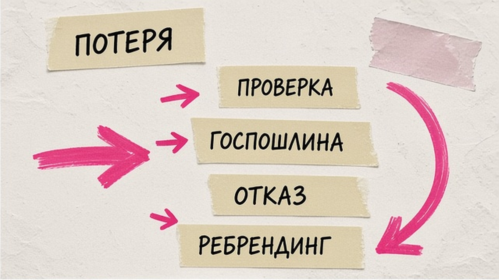
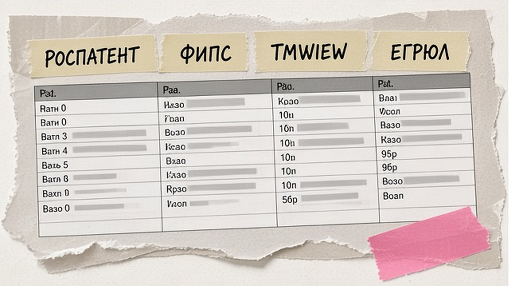
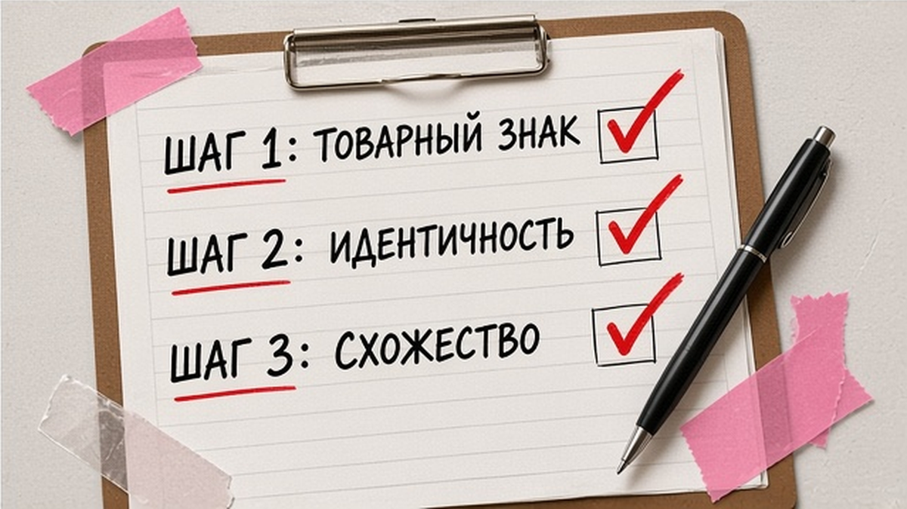

Вы выбрали имя бренда, заказали упаковку и готовите заявку в Роспатент - а в открытом реестре уже есть чужой знак в вашем классе МКТУ. Проверка товарного знака перед регистрацией по бесплатным базам Роспатента и ФИПС отсекает тождество и очевидные конфликты до оплаты пошлин. Ниже вы пройдёте Поисковую платформу, реестр заявок и TMview, сопоставите классы по МКТУ-13–2026 и решите: доработать обозначение, заказать предоценку ФИПС или идти к патентному поверенному.
TL;DR / Быстрый инсайт: Зафиксируйте слово, транслит и макет логотипа, затем подберите классы по тринадцатой редакции МКТУ (действует с 01.01.2026). Бесплатный поиск - Поисковая платформа Роспатента (круглосуточно с 11.12.2023). Обязательно смотрите реестр заявок на ФИПС, оценивайте сходство по звуку, смыслу и графике и однородность товаров. Самостоятельная проверка не заменяет поверенного при спорных комбинированных знаках.
Проверка перед подачей - фильтр до денег, а не гарантия регистрации. Отказ возможен по п. 6 ст. 1483 ГК РФ (сходство до смешения в однородных товарах) и по абсолютным основаниям п. 1–3 той же статьи. С 04.10.2025 пошлины за экспертизу выросли: имеет смысл потратить 1–2 дня на DIY, пока название ещё можно поменять. Зачем вообще регистрировать знак - в материале 7 причин зарегистрировать товарный знак, здесь только чек-лист по реестрам.

Типичный сценарий: предприниматель платит за подачу и экспертизу по существу, ждёт месяцы и получает отказ из-за чужого знака, который можно было увидеть в Поисковой платформе за час. Пошлина - плата за рассмотрение заявки; при отказе по сходству она не возвращается автоматически, возврат возможен только по узким основаниям Положения о пошлинах.
По актуальным пошлинам Роспатента (сводка Patent24): подача и формальная экспертиза - 4 000 руб. за первый класс и 1 000 руб. за каждый следующий; экспертиза по существу с 04.10.2025 - 13 000 руб. плюс доплаты за лишние классы и позиции в перечне. Канон - таблица на rospatent.gov.ru; чем шире заявка, тем дороже пропущенный конфликт.
Делайте: выделить 1–2 рабочих дня на проверку, пока макет и название гибкие. Не делайте: считать свободный домен или пустую выдачу в поисковике заменой реестра заявок ФИПС.

Сводка Роспатента о бесплатных сервисах (ГАРАНТ) перечисляет платформу, реестры, МКТУ, лексико-семантический идентификатор; полный FAQ - на rospatent.gov.ru. Полнотекстовые базы ТЗ в платной ИПС ФИПС для старта не обязательны.
| Инструмент | Где открыть | Что ищем | Ограничение DIY |
|---|---|---|---|
| Поисковая платформа | searchplatform.rospatent.gov.ru | Текст, изображение, звук и смысл; ТЗ, заявки, мадридские знаки в РФ | Сходство "до смешения" оцениваете приблизительно |
| Открытые реестры ФИПС | открытые реестры ФИПС (обзор) | Статус по номеру: действует, прекратил, стадия заявки | Поиск только по номеру; символы *, ?, >, < в запросе не работают |
| Реестр заявок | Раздел открытых реестров ФИПС | Поданные, но ещё не зарегистрированные обозначения | Нужны номера из платформы |
| TMview / ВОИС | WIPO Brand Database | Международные и мадридские знаки, контекст импорта | Не заменяет российскую экспертизу |
| Предоценка ФИПС | тарифы предоценки (сводка) | Заключение об охраноспособности, словесный знак, 1 класс | 46 200 руб. с НДС, 15 рабочих дней (тариф на fips.ru) |
Вне реестров сверьте фирменное наименование в ЕГРЮЛ, домен и карточки на маркетплейсах. Это не подменяет п. 6 ст. 1483, но снижает споры с контрагентами.
Делайте: идти сверху вниз: платформа, затем статусы по номерам в реестрах. Не делайте: платить коммерческим "проверкам за один день" до прохода официальных баз - так видно, за что платите.
Маршрут проверки:
Обозначение и МКТУ-13 → Поисковая платформа → реестр заявок и статусы → TMview / мадридский реестр → однородность → абсолютные риски ст. 1483 → решение

Экспертиза сравнивает обозначения по звуку, смыслу и графике. Вопрос "свободен ли товарный знак" на практике значит: нет опасных совпадений в ваших классах МКТУ, а не пустая выдача в Google. Ищите название в кириллице, латинице и транслите; для комбинированного знака - отдельно словесную часть и загрузку макета в платформу.
Делайте: учитывать заявки и созвучные аналоги, не только полное совпадение букв. Не делайте: ограничиваться одним языком написания бренда.
МКТУ делит рынок на 45 классов; конфликт часто в "соседних" классах. П. 6 ст. 1483 требует однородности товаров - риск спутать источник. Сверьте перечни в карточках знаков с ассортиментом; при сомнении - лексико-семантический идентификатор на ФИПС. Делайте: классы с запасом на 3–5 лет. Не делайте: раздувать перечень - лишние позиции удорожают пошлину с 04.10.2025.
Даже без чужих знаков возможен отказ по п. 1–3 ст. 1483: нет различительной способности, обозначение описывает товар ("Свежий хлеб" для булочной), вводит в заблуждение или содержит запрещённые элементы. Проверьте: название не общий термин отрасли, нет ложной географии ("Швейцарские часы" без связи со Швейцарией), нет чужих символов и фирменных имён без согласия.
Делайте: держать запасной вариант названия и слогана. Не делайте: копировать чужой фирстиль или известный бренд "с одной буквой".
Сведите риски в таблицу: знак, номер, классы, тип сходства, однородность, вывод. Несколько строк с высоким риском - повод доработать имя до оплаты пошлин.
К поверенному или на предоценку ФИПС - при комбинированном знаке или высоких рисках сходства. ФИПС: +7 (495) 531-6340, 10:00–16:00. Лирейт помогает пройти маршрут по реестрам без обещаний регистрации. После выхода на рынок - защита знака в сети.
Материал проверен: редакция Лирейт, практика регистрации товарных знаков.
Достоверность данных: тарифы предоценки ФИПС, правила открытых реестров, пошлины и нормы ст. 1483 ГК РФ сверены с сайтами Роспатента и ФИПС на 18.10.2026. Показы Яндекс Вордстат в среде подготовки материала не запрашивались.
Откройте Поисковую платформу и открытые реестры на ФИПС (fips.ru/registers-web), включая реестр заявок. Для импорта добавьте TMview. Сохраняйте номера документов и скриншоты - пригодятся поверенному.
Один словесный знак и 1–2 класса - от нескольких часов. Несколько классов и логотип - 1–2 рабочих дня. Глубокий разбор сходства чаще уходит на предоценку ФИПС или патентного поверенного.
Зависит от сходства и однородности по п. 6 ст. 1483. Другой номер класса МКТУ не гарантирует регистрацию, если товары однородны. Оцените звук, смысл и графику до подачи.
Открытый реестр рассчитан на поиск по номеру документа без масок. Поисковая платформа ищет по слову, изображению и смыслу и показывает заявки и регистрации в одном интерфейсе. Сначала находите кандидатов на платформе, затем уточняйте статус по номеру в реестре.
Для подачи не обязательна. Предоценка - 15 раб. дней, от 46 200 руб. за словесный знак и один класс (fips.ru). Уместна при спорном сходстве или крупных вложениях в бренд.
Да. Реестр заявок на ФИПС и выдача Поисковой платформы включают обозначения на стадии экспертизы. Игнорировать заявки опасно: при регистрации чужого знака вашу заявку могут отклонить.
Только по основаниям Положения о пошлинах, например если ведомство не совершило действие, за которое взята плата. Отказ по сходству сам по себе полного возврата не даёт.